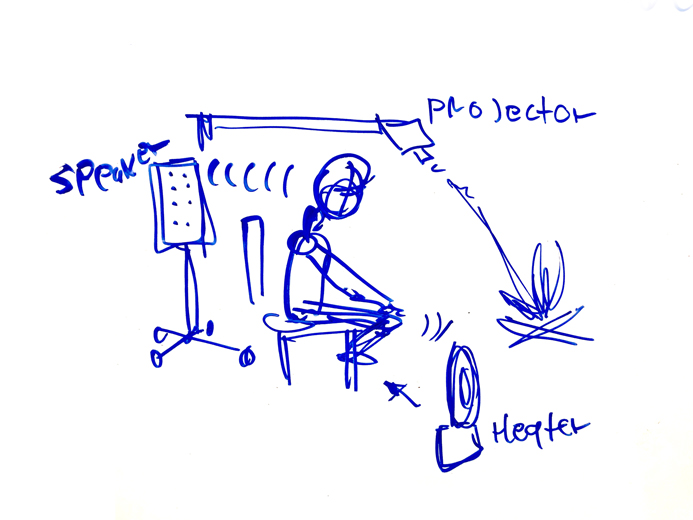

Reading 1
Instagram/Facebook has created this sense that we ought to compare to others through vanity metrics. People in these platforms create curated stories, to play with other peoples perception of them.
Question 1: How do we use the internet to show more of our individuality, rather than participating in these rigid platforms, designed to put us agasint each other
This got me thinking if we can have other ways to collect revenue, so that journliastic websites dont have to depend on ads. The control advertisng has on these websites our destroying our democracy.
Question 2 (Crazy and little unrelated): What if you projected a fireplace in the middle of a room, hooked up to a speaker system and heater, and instead of reading a story, an audio of someone narrating a story comes on the speaker while the heater is activated?
.... just thinking of alternatives to use the internet to make stuff happen.
